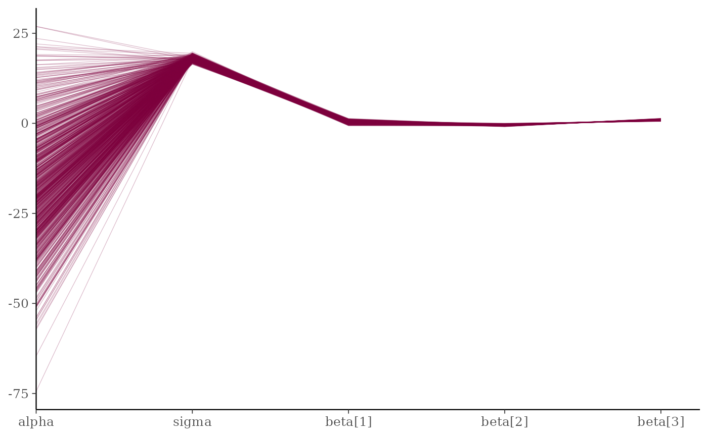
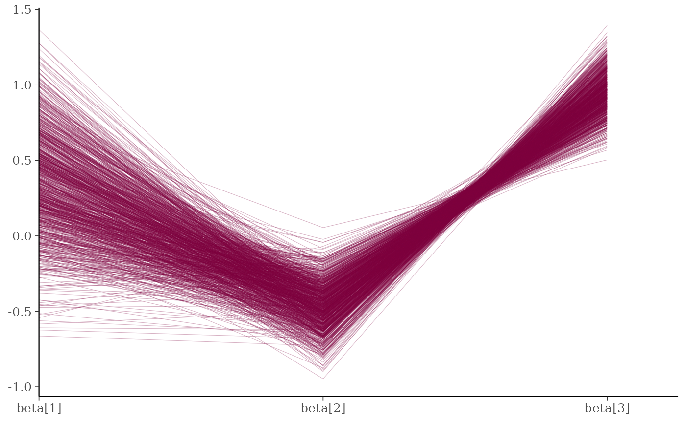
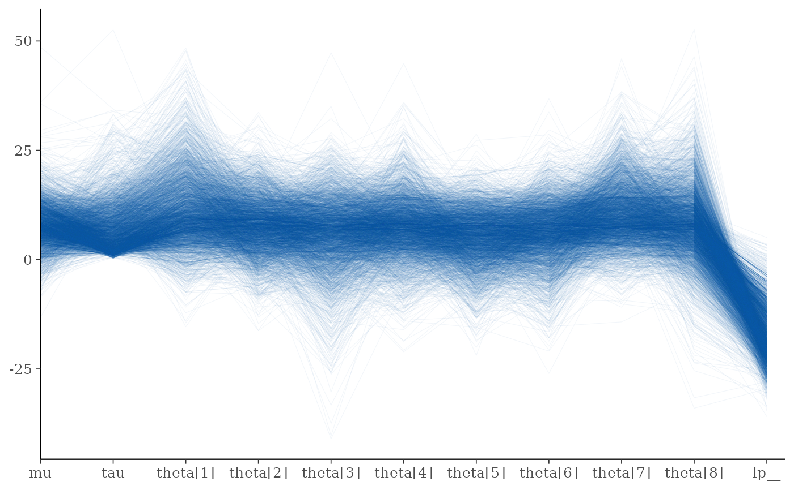
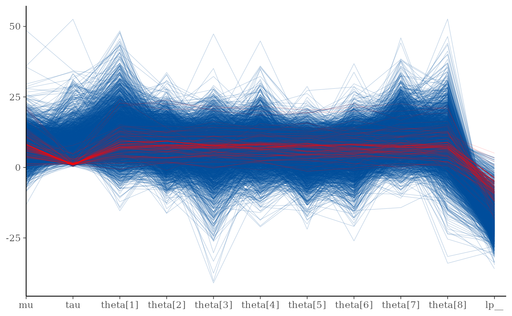
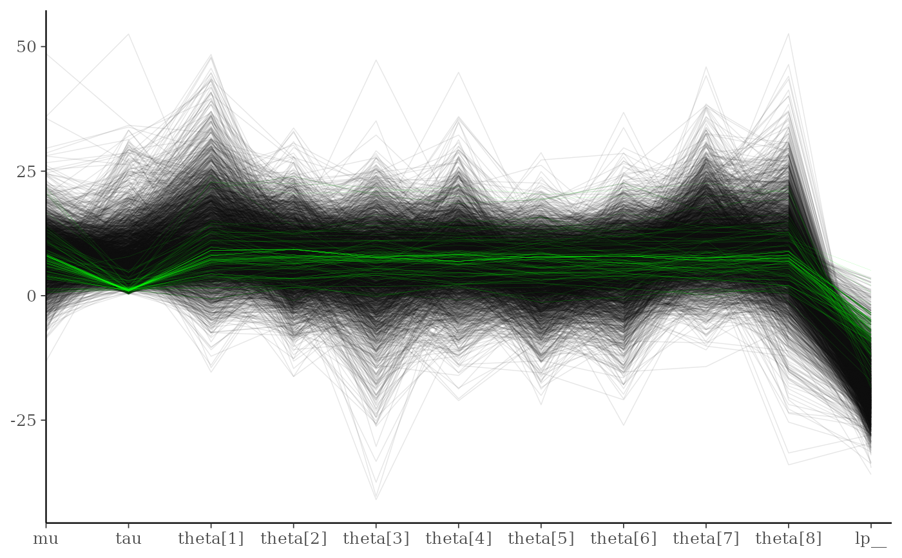
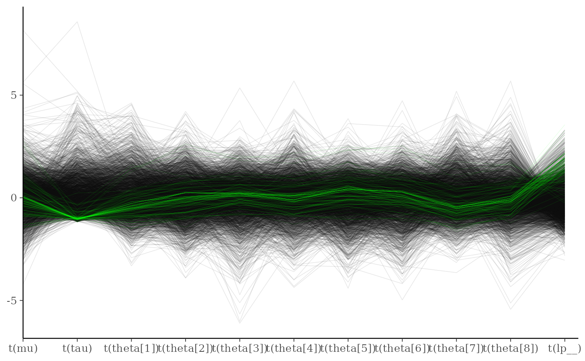

Parallel coordinates plot of MCMC draws (one dimension per parameter). See the Plot Descriptions section below for details, and see Gabry et al. (2019) for more background and a real example.
Usage
mcmc_parcoord(
x,
pars = character(),
regex_pars = character(),
transformations = list(),
...,
size = 0.2,
alpha = 0.3,
np = NULL,
np_style = parcoord_style_np()
)
mcmc_parcoord_data(
x,
pars = character(),
regex_pars = character(),
transformations = list(),
np = NULL
)
parcoord_style_np(div_color = "red", div_size = 0.2, div_alpha = 0.2)Arguments
- x
An object containing MCMC draws:
A 3-D array, matrix, list of matrices, or data frame. The MCMC-overview page provides details on how to specify each these.
A
drawsobject from the posterior package (e.g.,draws_array,draws_rvars, etc.).An object with an
as.array()method that returns the same kind of 3-D array described on the MCMC-overview page.
- pars
An optional character vector of parameter names. If neither
parsnorregex_parsis specified then the default is to use all parameters. As of version1.7.0, bayesplot also supports 'tidy' parameter selection by specifyingpars = vars(...), where...is specified the same way as in dplyr::select(...) and similar functions. Examples of usingparsin this way can be found on the Tidy parameter selection page.- regex_pars
An optional regular expression to use for parameter selection. Can be specified instead of
parsor in addition topars. When usingparsfor tidy parameter selection, theregex_parsargument is ignored since select helpers perform a similar function.- transformations
Optionally, transformations to apply to parameters before plotting. If
transformationsis a function or a single string naming a function then that function will be used to transform all parameters. To apply transformations to particular parameters, thetransformationsargument can be a named list with length equal to the number of parameters to be transformed. Currently only univariate transformations of scalar parameters can be specified (multivariate transformations will be implemented in a future release). Iftransformationsis a list, the name of each list element should be a parameter name and the content of each list element should be a function (or any item to match as a function viamatch.fun(), e.g. a string naming a function). If a function is specified by its name as a string (e.g."log"), then it can be used to construct a new parameter label for the appropriate parameter (e.g."log(sigma)"). If a function itself is specified (e.g.logorfunction(x) log(x)) then"t"is used in the new parameter label to indicate that the parameter is transformed (e.g."t(sigma)").Note: due to partial argument matching
transformationscan be abbreviated for convenience in interactive use (e.g.,transform).- ...
Currently ignored.
- size, alpha
Arguments passed on to
ggplot2::geom_line().- np
For models fit using NUTS (more generally, any symplectic integrator), an optional data frame providing NUTS diagnostic information. The data frame should be the object returned by
nuts_params()or one with the same structure.- np_style
A call to the
parcoord_style_np()helper function to specify arguments controlling the appearance of superimposed lines representing NUTS diagnostics (in this case divergences) if thenpargument is specified.- div_color, div_size, div_alpha
Optional arguments to the
parcoord_style_np()helper function that are eventually passed toggplot2::geom_line()if thenpargument is also specified. They control the color, size, and transparency specifications for showing divergences in the plot. The default values are displayed in the Usage section above.
Value
The plotting functions return a ggplot object that can be further
customized using the ggplot2 package. The functions with suffix
_data() return the data that would have been drawn by the plotting
function.
Plot Descriptions
mcmc_parcoord()Parallel coordinates plot of MCMC draws. There is one dimension per parameter along the horizontal axis and each set of connected line segments represents a single MCMC draw (i.e., a vector of length equal to the number of parameters).
The parallel coordinates plot is most useful if the optional HMC/NUTS diagnostic information is provided via the
npargument. In that case divergences are highlighted in the plot. The appearance of the divergences can be customized using thenp_styleargument and theparcoord_style_nphelper function. This version of the plot is the same as the parallel coordinates plot described in Gabry et al. (2019).When the plotted model parameters are on very different scales the
transformationsargument can be useful. For example, to standardize all variables before plotting you could use function(x - mean(x))/sd(x)when specifying thetransformationsargument tomcmc_parcoord. See the Examples section for how to do this.
References
Gabry, J. , Simpson, D. , Vehtari, A. , Betancourt, M. and Gelman, A. (2019), Visualization in Bayesian workflow. J. R. Stat. Soc. A, 182: 389-402. doi:10.1111/rssa.12378. (journal version, arXiv preprint, code on GitHub)
Hartikainen, A. (2017, Aug 23). Concentration of divergences (Msg 21). Message posted to The Stan Forums: https://discourse.mc-stan.org/t/concentration-of-divergences/1590/21.
Examples
color_scheme_set("pink")
x <- example_mcmc_draws(params = 5)
mcmc_parcoord(x)

mcmc_parcoord(x, regex_pars = "beta")

# \dontrun{
# Example using a Stan demo model
library(rstan)
#> Loading required package: StanHeaders
#>
#> rstan version 2.32.7 (Stan version 2.32.2)
#> For execution on a local, multicore CPU with excess RAM we recommend calling
#> options(mc.cores = parallel::detectCores()).
#> To avoid recompilation of unchanged Stan programs, we recommend calling
#> rstan_options(auto_write = TRUE)
#> For within-chain threading using `reduce_sum()` or `map_rect()` Stan functions,
#> change `threads_per_chain` option:
#> rstan_options(threads_per_chain = 1)
fit <- stan_demo("eight_schools")
#>
#> > J <- 8
#>
#> > y <- c(28, 8, -3, 7, -1, 1, 18, 12)
#>
#> > sigma <- c(15, 10, 16, 11, 9, 11, 10, 18)
#>
#> > tau <- 25
#>
#> SAMPLING FOR MODEL 'eight_schools' NOW (CHAIN 1).
#> Chain 1:
#> Chain 1: Gradient evaluation took 1.1e-05 seconds
#> Chain 1: 1000 transitions using 10 leapfrog steps per transition would take 0.11 seconds.
#> Chain 1: Adjust your expectations accordingly!
#> Chain 1:
#> Chain 1:
#> Chain 1: Iteration: 1 / 2000 [ 0%] (Warmup)
#> Chain 1: Iteration: 200 / 2000 [ 10%] (Warmup)
#> Chain 1: Iteration: 400 / 2000 [ 20%] (Warmup)
#> Chain 1: Iteration: 600 / 2000 [ 30%] (Warmup)
#> Chain 1: Iteration: 800 / 2000 [ 40%] (Warmup)
#> Chain 1: Iteration: 1000 / 2000 [ 50%] (Warmup)
#> Chain 1: Iteration: 1001 / 2000 [ 50%] (Sampling)
#> Chain 1: Iteration: 1200 / 2000 [ 60%] (Sampling)
#> Chain 1: Iteration: 1400 / 2000 [ 70%] (Sampling)
#> Chain 1: Iteration: 1600 / 2000 [ 80%] (Sampling)
#> Chain 1: Iteration: 1800 / 2000 [ 90%] (Sampling)
#> Chain 1: Iteration: 2000 / 2000 [100%] (Sampling)
#> Chain 1:
#> Chain 1: Elapsed Time: 0.038 seconds (Warm-up)
#> Chain 1: 0.024 seconds (Sampling)
#> Chain 1: 0.062 seconds (Total)
#> Chain 1:
#>
#> SAMPLING FOR MODEL 'eight_schools' NOW (CHAIN 2).
#> Chain 2:
#> Chain 2: Gradient evaluation took 2e-06 seconds
#> Chain 2: 1000 transitions using 10 leapfrog steps per transition would take 0.02 seconds.
#> Chain 2: Adjust your expectations accordingly!
#> Chain 2:
#> Chain 2:
#> Chain 2: Iteration: 1 / 2000 [ 0%] (Warmup)
#> Chain 2: Iteration: 200 / 2000 [ 10%] (Warmup)
#> Chain 2: Iteration: 400 / 2000 [ 20%] (Warmup)
#> Chain 2: Iteration: 600 / 2000 [ 30%] (Warmup)
#> Chain 2: Iteration: 800 / 2000 [ 40%] (Warmup)
#> Chain 2: Iteration: 1000 / 2000 [ 50%] (Warmup)
#> Chain 2: Iteration: 1001 / 2000 [ 50%] (Sampling)
#> Chain 2: Iteration: 1200 / 2000 [ 60%] (Sampling)
#> Chain 2: Iteration: 1400 / 2000 [ 70%] (Sampling)
#> Chain 2: Iteration: 1600 / 2000 [ 80%] (Sampling)
#> Chain 2: Iteration: 1800 / 2000 [ 90%] (Sampling)
#> Chain 2: Iteration: 2000 / 2000 [100%] (Sampling)
#> Chain 2:
#> Chain 2: Elapsed Time: 0.048 seconds (Warm-up)
#> Chain 2: 0.033 seconds (Sampling)
#> Chain 2: 0.081 seconds (Total)
#> Chain 2:
#>
#> SAMPLING FOR MODEL 'eight_schools' NOW (CHAIN 3).
#> Chain 3:
#> Chain 3: Gradient evaluation took 2e-06 seconds
#> Chain 3: 1000 transitions using 10 leapfrog steps per transition would take 0.02 seconds.
#> Chain 3: Adjust your expectations accordingly!
#> Chain 3:
#> Chain 3:
#> Chain 3: Iteration: 1 / 2000 [ 0%] (Warmup)
#> Chain 3: Iteration: 200 / 2000 [ 10%] (Warmup)
#> Chain 3: Iteration: 400 / 2000 [ 20%] (Warmup)
#> Chain 3: Iteration: 600 / 2000 [ 30%] (Warmup)
#> Chain 3: Iteration: 800 / 2000 [ 40%] (Warmup)
#> Chain 3: Iteration: 1000 / 2000 [ 50%] (Warmup)
#> Chain 3: Iteration: 1001 / 2000 [ 50%] (Sampling)
#> Chain 3: Iteration: 1200 / 2000 [ 60%] (Sampling)
#> Chain 3: Iteration: 1400 / 2000 [ 70%] (Sampling)
#> Chain 3: Iteration: 1600 / 2000 [ 80%] (Sampling)
#> Chain 3: Iteration: 1800 / 2000 [ 90%] (Sampling)
#> Chain 3: Iteration: 2000 / 2000 [100%] (Sampling)
#> Chain 3:
#> Chain 3: Elapsed Time: 0.044 seconds (Warm-up)
#> Chain 3: 0.03 seconds (Sampling)
#> Chain 3: 0.074 seconds (Total)
#> Chain 3:
#>
#> SAMPLING FOR MODEL 'eight_schools' NOW (CHAIN 4).
#> Chain 4:
#> Chain 4: Gradient evaluation took 3e-06 seconds
#> Chain 4: 1000 transitions using 10 leapfrog steps per transition would take 0.03 seconds.
#> Chain 4: Adjust your expectations accordingly!
#> Chain 4:
#> Chain 4:
#> Chain 4: Iteration: 1 / 2000 [ 0%] (Warmup)
#> Chain 4: Iteration: 200 / 2000 [ 10%] (Warmup)
#> Chain 4: Iteration: 400 / 2000 [ 20%] (Warmup)
#> Chain 4: Iteration: 600 / 2000 [ 30%] (Warmup)
#> Chain 4: Iteration: 800 / 2000 [ 40%] (Warmup)
#> Chain 4: Iteration: 1000 / 2000 [ 50%] (Warmup)
#> Chain 4: Iteration: 1001 / 2000 [ 50%] (Sampling)
#> Chain 4: Iteration: 1200 / 2000 [ 60%] (Sampling)
#> Chain 4: Iteration: 1400 / 2000 [ 70%] (Sampling)
#> Chain 4: Iteration: 1600 / 2000 [ 80%] (Sampling)
#> Chain 4: Iteration: 1800 / 2000 [ 90%] (Sampling)
#> Chain 4: Iteration: 2000 / 2000 [100%] (Sampling)
#> Chain 4:
#> Chain 4: Elapsed Time: 0.035 seconds (Warm-up)
#> Chain 4: 0.134 seconds (Sampling)
#> Chain 4: 0.169 seconds (Total)
#> Chain 4:
#> Warning: There were 109 divergent transitions after warmup. See
#> https://mc-stan.org/misc/warnings.html#divergent-transitions-after-warmup
#> to find out why this is a problem and how to eliminate them.
#> Warning: There were 1 chains where the estimated Bayesian Fraction of Missing Information was low. See
#> https://mc-stan.org/misc/warnings.html#bfmi-low
#> Warning: Examine the pairs() plot to diagnose sampling problems
#> Warning: Bulk Effective Samples Size (ESS) is too low, indicating posterior means and medians may be unreliable.
#> Running the chains for more iterations may help. See
#> https://mc-stan.org/misc/warnings.html#bulk-ess
#> Warning: Tail Effective Samples Size (ESS) is too low, indicating posterior variances and tail quantiles may be unreliable.
#> Running the chains for more iterations may help. See
#> https://mc-stan.org/misc/warnings.html#tail-ess
draws <- as.array(fit, pars = c("mu", "tau", "theta", "lp__"))
np <- nuts_params(fit)
str(np)
#> 'data.frame': 24000 obs. of 4 variables:
#> $ Chain : int 1 1 1 1 1 1 1 1 1 1 ...
#> $ Iteration: int 1 2 3 4 5 6 7 8 9 10 ...
#> $ Parameter: Factor w/ 6 levels "accept_stat__",..: 1 1 1 1 1 1 1 1 1 1 ...
#> $ Value : num 0.995 0.987 0.835 0.855 0.948 ...
levels(np$Parameter)
#> [1] "accept_stat__" "stepsize__" "treedepth__" "n_leapfrog__"
#> [5] "divergent__" "energy__"
color_scheme_set("brightblue")
mcmc_parcoord(draws, alpha = 0.05)

mcmc_parcoord(draws, np = np)

# customize appearance of divergences
color_scheme_set("darkgray")
div_style <- parcoord_style_np(div_color = "green", div_size = 0.05, div_alpha = 0.4)
mcmc_parcoord(draws, size = 0.25, alpha = 0.1,
np = np, np_style = div_style)

# to use a transformation (e.g., standardizing all the variables can be helpful)
# specify the 'transformations' argument (though partial argument name
# matching means we can just use 'trans' or 'transform')
mcmc_parcoord(
draws,
transform = function(x) {(x - mean(x)) / sd(x)},
size = 0.25,
alpha = 0.1,
np = np,
np_style = div_style
)

# mcmc_parcoord_data returns just the data in a conventient form for plotting
d <- mcmc_parcoord_data(x, np = np)
head(d)
#> # A tibble: 6 × 4
#> Draw Parameter Value Divergent
#> <int> <fct> <dbl> <dbl>
#> 1 1 alpha -14.1 0
#> 2 2 alpha -20.0 0
#> 3 3 alpha -21.0 0
#> 4 4 alpha -36.3 0
#> 5 5 alpha -7.58 0
#> 6 6 alpha -10.4 0
tail(d)
#> # A tibble: 6 × 4
#> Draw Parameter Value Divergent
#> <int> <fct> <dbl> <dbl>
#> 1 995 beta[3] 1.04 0
#> 2 996 beta[3] 1.07 0
#> 3 997 beta[3] 0.983 0
#> 4 998 beta[3] 0.821 0
#> 5 999 beta[3] 0.903 0
#> 6 1000 beta[3] 0.858 0
# }